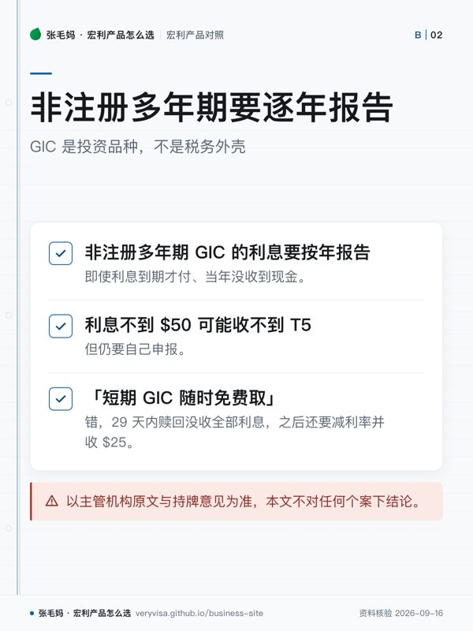

- 解决什么问题确定一段时间不动的钱，用锁定利率换确定性
- 门槛长期档最低 $2,500（按月付息需 $10,000）；短期档最低 $25,000
- 退出代价非注册／RRSP／RRIF 长期档不可提前赎回；TFSA 可赎但有 MVA 与费用回收
- 税务后果非注册多年期利息按年报告，即使到期才付；不到 $50 收不到 T5 也要申报
知识卡
不看正文也能拿到这一页的核心规则：先看导读，再看图。点图放大，左右翻页。
- 先看先看最低投资额，再看要锁的期限和对应牌价。
- 易漏TFSA 内长期 GIC 可以提前赎回，但要做市场价值调整（MVA）并扣费用回收，且须全额赎回。
- 下一步去按对比，带期限和是否要提前赎回的问题找持牌专业人士。

- 先看先看非注册多年期利息如何申报，再看有没有收到 T5。
- 易漏注册账户内的 GIC 取出时按 TFSA／RRSP／RRIF 的规则处理；到期取回本金本身不是新的收入。
- 下一步去按税务问题，带着账户外壳与取款情形找持牌专业人士。
GIC 的取舍只有两件事：锁多久，以及锁进去之后还能不能拿出来。这两件事在长期档和短期档、 在非注册和 TFSA 里的答案都不一样，下面按官方原文一条条列出来。
放在这里的钱和放在活期账户里的钱怎么分，去看活钱放活期王还是锁 GIC； 多年期 GIC 的利息什么时候要报税，去看利息收入与 T5。
一句话
Manulife Bank GIC 是银行定期存款：1–5 年期锁定利率、长期档大多不能提前取、受 CDIC 按类别保护；它和 Manulife 人寿发行的 GIA 不是同一种东西。
事实清单
- 非注册长期 GIC 年付息利率：1 年 3.00%、2 年 3.30%、3 年 3.35%、4 年 3.40%、5 年 3.65%（2026-09-15 核对牌价）。✅源
- TFSA／RRSP／RRIF 长期 GIC 与非注册同档利率一致。✅源
- 长期 GIC 最低投资额 $2,500，选按月付息需 $10,000。✅源
- 短期 GIC 利率：30–59 天与 60–89 天 1.75%、90–179 天 1.90%、180–269 天 2.38%、270–364 天 2.50%。✅源
- 短期 GIC 最低投资额 $25,000。✅源
- 非注册、RRSP、RRIF 长期 GIC 为不可提前赎回，身故是到期前赎回的例外。✅源
- TFSA 内长期 GIC 可以提前赎回，但要做市场价值调整（MVA）并扣费用回收，且须全额赎回。✅源
- 短期 GIC 提前赎回：29 天内赎回没收全部利息；第 30 天起利率减 1.25 个百分点按天计，另收 $25 手续费。✅源
- Manulife Bank 是 CDIC 成员，其 GIC 属于合资格存款。✅源
- CDIC 按同一成员机构、每个存款类别（个人、联名、RRSP、RRIF、TFSA、FHSA 等）分别保护最高 $100,000，含本金与利息。✅源
- 现金账户与 Manulife Bank Guaranteed Interest Contracts（官方原文用词）利息全年 $50 或以上，Manulife 发 T5／RL-3。✅源
与同类产品比较
口径：GIC 牌价每天可变，五大行数字来自不同日期的官方页，只作结构对照，不作「谁利率高」的结论。
| 机构 | 代表利率 | 提前取出 | 最低金额 | 出处日期 |
|---|---|---|---|---|
| Manulife Bank | 1 年 3.00%／5 年 3.65% ✅源 | 长期档不可赎（TFSA 例外，有 MVA）✅源 | 长期 $2,500；短期 $25,000 ✅源 | 2026-09-15 ✅源 |
| BMO | — | 有 Cashable 可兑现品种 ✅源 | — | 2026-09-15 ✅源 |
| CIBC | — | Flexible GIC 为 1 年期可兑现（Cashable）品种 ✅源 | Flexible GIC 最低 $1,000 ✅源 | 2026-09-15 ✅源 |
| Scotiabank | — | 有 Cashable 与 Non-Redeemable 两类 ✅源 | Cashable 最低 $500 ✅源 | 2026-09-15 ✅源 |
| TD | — | 有 Cashable 与 Non-Cashable 两类 ✅源 | — | 2026-09-15 ✅源 |
税务后果
- GIC 是投资品种，不是税务外壳：放在非注册、TFSA、RRSP、RRIF 里，税务结果完全跟外壳走。✅源
- 非注册多年期 GIC 的利息要按年报告，即使利息到期才付、当年没收到现金。✅源
- 利息不到 $50 可能收不到 T5，但仍要自己申报。✅源
- 到期取回本金本身不是新的收入；注册账户内的 GIC 取出时按 TFSA／RRSP／RRIF 的规则处理。
- 非居民持有非注册 GIC，与银行无关联的利息一般免加拿大非居民预扣税，但新居住国可能征税；Manulife 是否允许非居民续期，本轮未确认，离境前书面问银行。✅源
- 身故时，最终报税表要计入截至死亡日累计未收的利息；钱最后给谁（遗产或受益人）和税由谁报是两件事——问 estate 律师与 CPA。
- 以主管机构原文与持牌意见为准，本文不对任何个案下结论。
常见误区
- 「GIC 利息到期拿到才报税」——错，非注册多年期要逐年报告。✅源
- 「Bank GIC 和 GIA 一样，都有 $100,000 保障」——保护体系不同：Bank GIC 看 CDIC 按类别算，GIA 由 Manulife 人寿发行、看 Assuris，规则另算。✅源
- 「短期 GIC 随时免费取」——错，29 天内赎回没收全部利息，之后还要减利率并收 $25。✅源
- 「RRSP 里的长期 GIC 急用可以先取」——长期档不可提前赎回，急用钱别放这一层。✅源
- 早期整理稿把长期 GIC 写成「年复利口径」，核实报告写的是年付息牌价；复利与付息方式以官方页为准。✅源
- 「银行 GIC 能指定受益人、避开遗产程序」——不能当普遍结论：注册账户里的 GIC 跟账户的指定走，非注册 GIC 跟所有权与遗产走。✅源
事实来源
该问经纪的问题（抄下来直接问）
- 我这笔钱未来 1–5 年里哪一年一定要用？按用钱时间怎么把 GIC 分成几档到期？
- 我在 Manulife 的个人存款、TFSA、RRSP 加起来，每个 CDIC 类别有没有超过保护额度？
- 同样想锁定利率，Bank GIC 和 Manulife 人寿的 GIA 在身故传承和提前取出上差在哪里，我更适合哪个？
- 这一页的数字核对日期是哪天？到我签字那天，哪几个会变？
- 同样的需求，除了这个产品还有哪些选择，为什么你不建议那几个？
去论坛讨论
音视频与笔记本
- nb-manulife-bank
本页是公开资料的整理与对照，不是官方文件，也不构成针对你个人情况的保险、投资或税务建议。产品条款、利率与费用以机构当期官方文件为准；税务处理以主管机构原文与持牌专业意见为准。数字会变，看到本页请对一眼「核对日期」。